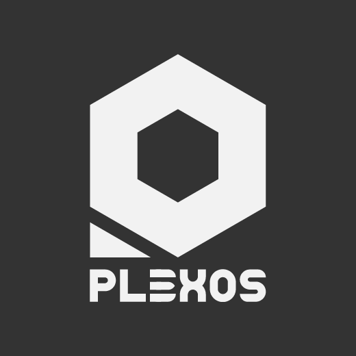
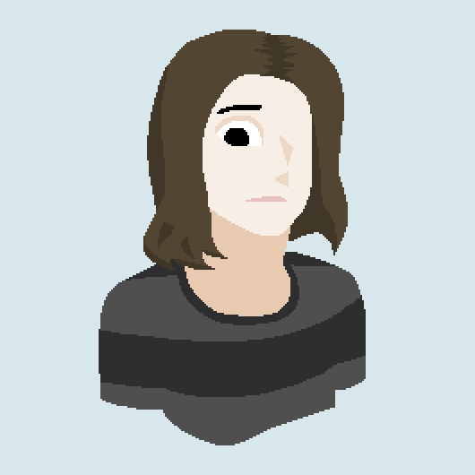

Yoe 👋, I'm Pentacoro, legal name Sebastian, Norrum was my nickname yet by now it became sort of my personal brand. RE/BH fan. Any pronouns. 🇵🇾 🇦🇷 🇦🇶
Self-taught Graphic Designer, 2D Animator and Video Editor, Producer and Writer, with advanced handling of Adobe applications: Photoshop, Illustrator and Animate. I currently do video editing with Vegas Pro 18.
Previously worked as an RPA Developer at Ctrl365, in charge with the design, development and documentation of business automation processes as per client requisites, using Blue Prism.
Studied Full-Stack Web Development at EducaciónIT, proficient in HTML, CSS and JavaScript, capable in ReactJS, and back-end development with PHP Laravel and SQL servers. Certified Blue Prism developer.
Also working on my own app Plexos, made and run entirely on client-side
Javascript, done without the use of any libraries. This right here is its Devlog website; check it out by the index.
In the most technical terms, Plexos is a WIMP interfaced internet bookmark manager web app. At this point in time, I've been coding Plexos for more than 1 year, and I plan to release it under the MIT licence.
Most notably, I run my own personal brand "Norrum Plexus", which came to represent the totality of my internet presence as a network for all my work pieces and content; my meta plexus.
I run a Youtube Channel with the same name, though video production is too time consuming to keep up with everything I do through vlogs, so I mostly use it to upload short heavily edited game-related videos and montages.
I was 16 when I made this animation in 2016
Sometimes I do digital art; almost all of it is up on my DeviantArt. It is strictly a hobby tho, I never took commissions and I don't think I ever will, so I'm sorry if you like my work that much lmao.
I mostly do pixelart, and for this I'd use either Aseprite or MS Paint, then the weird Photoshop piece. I don't have a tablet; everything is done through the power of my Logitech G502 and a very large mousepad.
My pixelart chibiverse collection
Lastly, I love videogames. Resident Evil is the only thing I consider myself a "fan" of, though I also love games that allow me to build stuff, like Rollercoaster Tycoon, The Sims and Minecraft.
I'm very fond of the PC adventure game, specially with its resurgence through the indie scene, and games like Kentucky Route Zero, Firewatch and Oxenfree, as well as narrative experiences like Disco Elysium and Signalis.